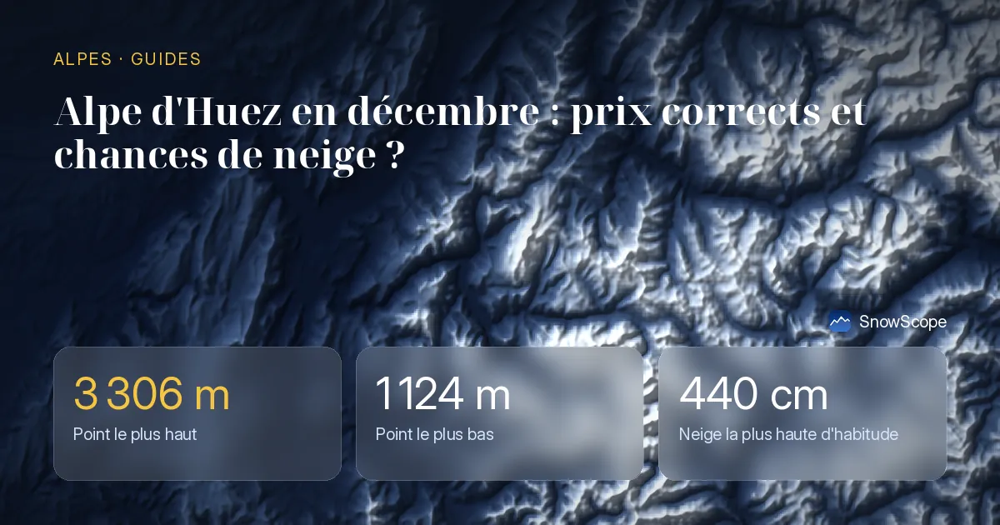
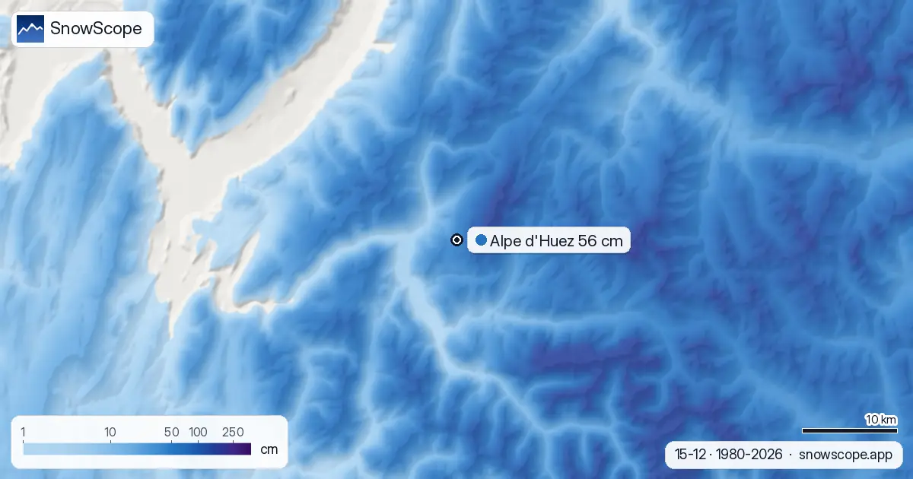

Alpe d'Huez en décembre : prix corrects et chances de neige ?
Vous organisez un voyage pour un groupe d'étudiants en décembre 2026 et vous regardez Alpe d'Huez ? Nous avons vérifié les prix officiels des forfaits et notre historique de neige de 46 hivers passés pour voir si cette célèbre station française offre un bon rapport qualité-prix.
Consultez les prévisions neige en temps réel pour Alpe d'Huez sur l'application SnowScopeHauteurs de neige, alertes poudreuse et carte 3D, gratuitement.
Le prix de départ est-il correct pour une grande station ?
Organiser un voyage pour un groupe d'étudiants signifie surveiller chaque euro dépensé. À Alpe d'Huez, le prix de départ du forfait adulte 1 jour pour l'hiver 2026-27 est de 58,00 EUR. Si vous restez plus longtemps, le forfait adulte 6 jours coûte 336,50 EUR.
Le domaine skiable balisé compte 163 km de pistes et 82 remontées mécaniques. Vous en avez pour votre argent, mais regardons les probabilités de neige avant de réserver.

Hauteur de neige au bas, au milieu et au sommet en décembre
Notre historique de neige de 46 hivers passés montre une grande différence entre le bas des remontées à 1 124 m et le haut à 3 306 m. En bas, la hauteur habituelle en décembre est de 14 cm. Le 15 décembre, la hauteur habituelle est de 13 cm. Lors d'un mois de décembre pauvre, elle tombe à 0 cm. La part des hivers avec 30 cm ou plus en bas n'est que de 4 pour cent du 1er au 7 décembre, montant à 28 pour cent du 22 au 28 décembre.
Les choses s'améliorent vite en montant. À mi-montagne à 2 215 m, la hauteur habituelle en décembre est de 60 cm, et la hauteur habituelle le 15 décembre est de 56 cm. Lors d'un mois de décembre pauvre, vous avez 25 cm, tandis qu'un mois de décembre riche apporte 107 cm. La part des hivers avec 30 cm ou plus à mi-montagne est de 70 pour cent la première semaine, et atteint 96 pour cent du 22 au 28 décembre.
Au sommet des remontées à 3 306 m, la hauteur habituelle en décembre est de 159 cm, avec 151 cm le 15 décembre. Lors d'un mois de décembre pauvre, vous trouvez encore 70 cm de neige, et un mois de décembre riche atteint 278 cm. La part des hivers avec 30 cm ou plus ici est de 98 pour cent la première semaine et 100 pour cent pour le reste du mois.
Conditions d'enneigement actuelles et perspectives sur deux semaines
En ce moment, la hauteur de neige au bas des remontées à 1 124 m est de 0 cm, avec 0 cm de neige fraîche attendus dans les 7 prochains jours. La mi-montagne à 2 215 m a 0 cm en ce moment, mais attend 59 cm de neige fraîche dans les 7 prochains jours. Au sommet des remontées à 3 306 m, la hauteur actuelle est de 58 cm, avec 90 cm attendus dans les 7 prochains jours. Pour la mi-montagne et au-dessus, les perspectives de neige fraîche sur deux semaines donnent une moyenne de 92 cm avec une fourchette de 73 cm à 110 cm.
Alpe d'Huez ou Les 2 Alpes
Comment Alpe d'Huez se compare-t-elle aux 2 Alpes de l'autre côté de la vallée ? Les 2 Alpes compte 108 km de pistes et 46 remontées mécaniques, avec une remontée la plus basse à 1 284 m et la plus haute à 3 511 m. Son forfait adulte 6 jours Grand Domaine coûte 266,50 EUR, tandis que le ticket 1 jour Freedom à date flexible est à 68,00 EUR.
Dans notre historique de neige, Les 2 Alpes a une hauteur habituelle en décembre de 16 cm à la base, 75 cm à mi-montagne, et 176 cm au sommet. Le 15 décembre, Les 2 Alpes a habituellement 14 cm à la base, 73 cm à mi-montagne, et 160 cm au sommet. Les deux stations ont une neige fiable en altitude, et Les 2 Alpes est la moins chère des deux pour un forfait 6 jours : 266,50 EUR contre 336,50 EUR.
Première neige, hiver dernier et tendances à long terme
Au bas d'Alpe d'Huez, le premier jour de neige durable habituel est le 12 novembre. Le pic saisonnier habituel est de 52 cm, avec 159 jours de neige habituels par hiver. À mi-montagne, le premier jour de neige durable habituel est le 18 octobre, avec un pic saisonnier de 184 cm et 218 jours de neige. Au sommet, la neige arrive habituellement vers le 30 septembre, atteignant un pic saisonnier de 440 cm sur 232 jours de neige.
En regardant la tendance à long terme, la hauteur moyenne de décembre à mi-montagne était de 50 cm lors des 15 premiers hivers de 1980-81 à 1994-95, et a augmenté à 65 cm lors des 15 derniers hivers de 2011-12 à 2025-26. Au sommet, la moyenne est passée de 133 cm à 165 cm entre les mêmes périodes. L'hiver dernier en décembre 2025, la hauteur moyenne était de 10 cm en bas, 49 cm à mi-montagne, et 132 cm au sommet. Le mois de décembre le plus pauvre jamais enregistré en bas était de 0 cm en 1989-90, tandis que le plus riche était de 42 cm en 1981-82.
Conseils aux skieurs
- Réservez votre forfait 6 jours sur le site officiel pour 336,50 EUR.
- Prévoyez votre ski à mi-montagne et dans les zones au-dessus de 2 215 m en décembre, car la base est souvent fine avec une hauteur habituelle de seulement 14 cm.
- Voyagez plus tard en décembre si possible, car la part des hivers avec 30 cm ou plus de neige en bas augmente de 4 pour cent la première semaine à 28 pour cent la dernière semaine.
- Vérifiez toujours la NERA (bulletin local des avalanches) avant de partir hors-piste, même quand les hauteurs au sommet atteignent 159 cm.
Autres cartes (sites externes)
Références et crédits
- Alpe d'Huez, official ski pass shop, winter 2026-27 skipass.alpedhuez.com/hiver/
- Les 2 Alpes, official ski pass shop, prices 2026-27 www.skipass-2alpes.com/en/pricing
- Les 2 Alpes, official ski pass shop, opening weekend offer www.skipass-2alpes.com/fr/forfaits/ski
- SnowScope, December snow at three heights and today's snow map snowscope.app/
À propos de ces chiffres
Chiffres de neige : historique SnowScope, 46 hivers passés (1980-81 à 2025-26) à trois altitudes de chaque station (un modèle du passé corrigé de l'altitude : une estimation pour une zone, pas des mesures de la station) ; chiffres de décembre calculés à partir des hauteurs quotidiennes de ces hivers. Neige actuelle et tendance à deux semaines : prévisions SnowScope (tendance ECMWF et GFS, une fourchette, pas une promesse). Remontées et pistes : cartographie OpenSkiMap. Prix : pages officielles des stations ci-dessous, lues le 2026-11-13 ; les prix peuvent changer, vérifiez avant de réserver.
Bulletins d'avalanche officiels: Météo-France – Bulletin d'estimation du risque d'avalanche
Citer ce bulletin
Pour la recherche, l'enseignement ou la presse : chiffres et graphiques réutilisables librement sous CC BY 4.0 avec cette citation.
SnowScope (2026), Alpe d'Huez en décembre : prix corrects et chances de neige ?, https://snowscope.app/blog/fr/2026/11/alpe-dhuez-december-ski-starting-price-snow-2026.html, consulté le 2026-11-14
SnowScope (Atlas Labs). (2026, November 14). Alpe d'Huez en décembre : prix corrects et chances de neige ?. SnowScope snow reports. https://snowscope.app/blog/fr/2026/11/alpe-dhuez-december-ski-starting-price-snow-2026.html
BibTeX
@misc{snowscope2026alpedhuezdecemberskistar,
author = {{SnowScope (Atlas Labs)}},
title = {Alpe d'Huez en décembre : prix corrects et chances de neige ?},
year = {2026},
month = nov,
howpublished = {\url{https://snowscope.app/blog/fr/2026/11/alpe-dhuez-december-ski-starting-price-snow-2026.html}},
note = {Published 2026-11-14 18:11 UTC; accessed 2026-11-14}
}· CC BY 4.0 · Méthodes, données et outils →
Alpe d'Huez : neige et température selon l'altitude, cet hiver vs l'hiver dernier (outils) →
Suivre Alpe d'Huez
Gratuit : un message quand la neige arrive, et la météo chaque matin.
Autres bulletins neige

Dévoluy, tendance neige : jusqu'à 24–32 cm possibles d'ici le 16 novembre (Alpes). D'ici le 16 novembre, notre prévision donne 35 cm à Orcières …

Nos choix sont La Grave, Pfelders et Les Deux Alpes : nous avons regardé la hauteur de neige du jour, la neige fraîche des 72 dernières heures et la …

Aujourd'hui, la neige la plus épaisse dans les Alpes est à La Grave (France), environ 97 cm sur le haut du domaine. Orelle suit avec 81 cm, et Les …